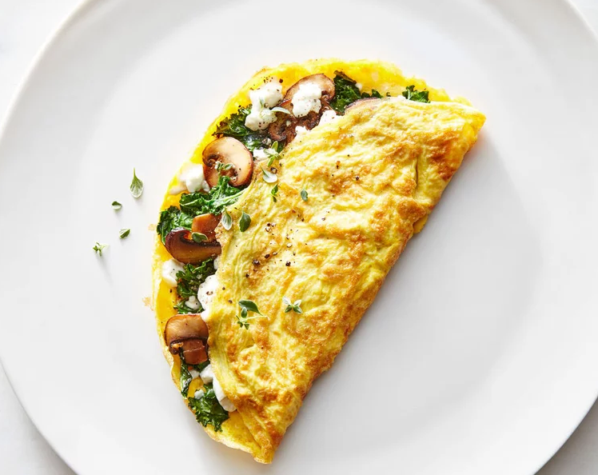

Cheese and Mushroom Omelette

A golden brown, folded omelette filled with cheese and veggies
Ingredients
- 2 teaspoons olive oil
- 1/2 cup sliced mushrooms
- 1/8 teaspoon salt
- 2 large eggs
- 1/4 teaspoon fresh ground black pepper
- 1 tablespoon cheddar cheese
How to make
- Heat 1 teaspoon of oil in a skillet over medium-high
- Add mushrooms and saute until golden brown (about 3 minutes) then place mushrooms in a bowl
- Break eggs into a bowl and mix/beat until completely blended and frothy
- Stir salt and pepper into egg mix
- Heat 1 teaspoon of oil in the same skillet over medium-high
- Add eggs and stir them around (use rubber heatproof spatula), pulling from the sides to the middle
- After about 2 minutes, spread the mushroom mixture over half of the eggs and sprinkle the cheese on top
- When the eggs are brown on the bottom, fold them over the filling and serve.